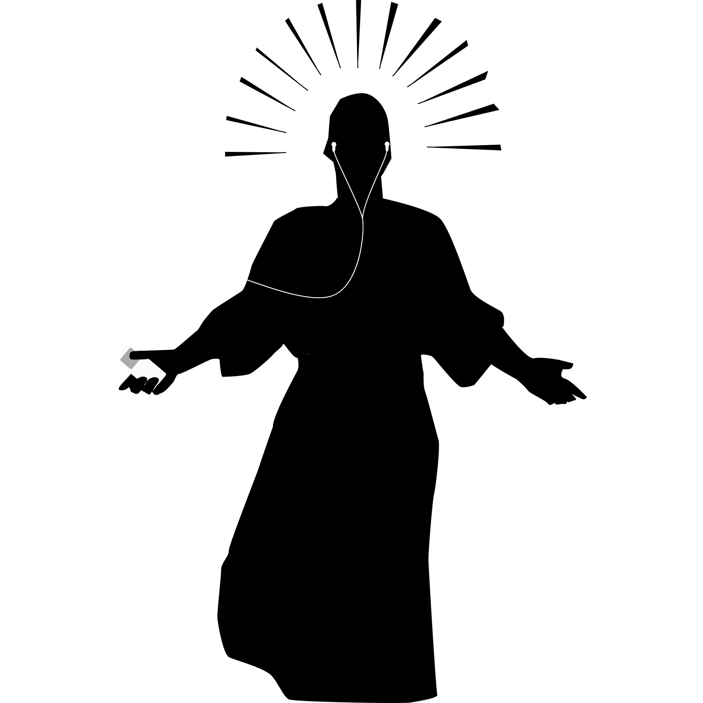

Before
Long before this glorious day, I was born in maternity hospital by my beloved mother.
Not so long after that, I went to the University and got my specialist degree in Veterinary-Sanitary Expertise.
That meant I was Quality Assurance guy. But in meat processing Industry.
For 8 years.
Yeah, I've got some fun stories to tell ☻
Now
Now is december 2022.
The machines rose from the ashes of nuclear fire to exterminate mankind.
Actually, not yet. So, at jan 2022 I switched career vector for software QA, and worked there until now.
I learned many interesting things on how our everyday complex stuff works. Web structure, APIs, XML, Python with these and those modules, SQL.
Yet the best thing I learned is - that IT is not some high-end sorcery unapproachable for usual muggles.
Yeah, here I felt that I can jump higher. And I jumped!
Currently I fly up towards junior frontend developer position.
And this is my first site.
First small step on the big road.
After
My future plans are simple yet elegant:
- Complete the basics of HTML and CSS
- Basic JavaScript
- Advanced JavaScript
- Make some browser projects to brag about
- Learn React framework
- Triumphal employment
- PROFIT